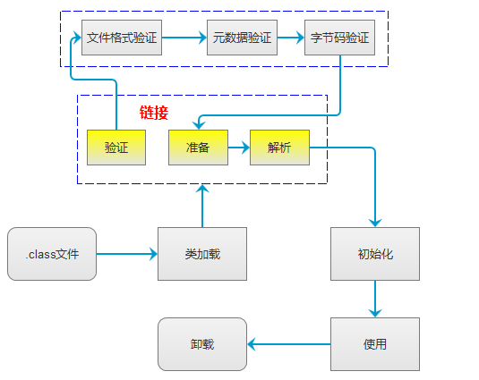

加载==》链接==》初始化==》使用==》卸载

加载：将.class文件转换成字节流，这一步完成之后到链接步骤
链接步骤是对字节流进行验证、准备，解析三个过程。
验证：确保被加载的文件正确性和安全性。
正确性：确保.class文件解析成字节流后，是可以使用的。
安全性：不至于危害虚拟机。
而验证又分为文件验证，元数据验证，字节码验证，符号引用验证。
文件验证：校验.class文件符合虚拟机规范。
元数据验证：对类层面的语法进行分析，类信息符合java规范。
字节码验证：主要验证类语法符合逻辑，不会危害java安全
符号引用验证：对类以外的信息进行校验，确保解析动作能够完成。
准备：为类变量分配内存并设置初始值。
public static int value=2;
在这个阶段会在方法区分配内存，并且赋值为0.
public final static int value=2;
这个是在编译的时候就把值确定了，分配在静态常量池中，
在这个阶段会把它从静态常量池加载到方法区中。
解析：将静态常量池中的符号引用转化成方法区中的直接引用。
符号引用：以一组虚拟机自己能够认识的符号标识所引用的目标。
比如一个人有可能叫张三，同时可能叫二狗子；他们都是指向同一个人。
直接引用：就是我们平时常说的空指针异常的指针了，就是在虚拟机内存中直接指向这个对象的指针。
主要解析对象是类，接口，字段，类方法，接口方法(我只能想到这么多了)等
初始化：初始化是在第一次使用这个类的时候进行的。而上面的步骤是在便于这一步的初始化。
第一次使用是什么时候呢？
1.new的时候，初始化的实例信息放在堆中，而静态信息放在方法区中
2.访问某个类或接口的静态变量或方法时
3.new某个字类，父类会被一同初始化
4.启动类
5.对某个类进行反射操作。
当然如果这个类之前已经初始化过了，再次访问就不需要初始化了。
初始化的最终结果是将这些类信息存储在方法区中。
并且把之前默认的静态变量赋值成我们指定的变量
说了这么一大坨东西，这些动作都是有谁来执行的呢？
答案是类加载器